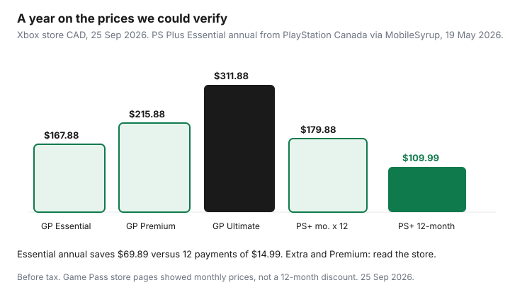

Subscriptions · Canada
Xbox Game Pass vs PlayStation Plus in Canada: Keep, Rotate, or Cancel
A household with an Xbox and a PlayStation often pays for both libraries because each child has a console and nobody has counted the hours. Game Pass and PlayStation Plus are not the same product. One is built around a large changing catalogue and, on the top tier, new games. The other is built around online multiplayer, with a catalogue only on the higher tiers, and with a real discount if you pay for a year of Essential. The decision is which of those jobs you used in the last 90 days, then one subscription, or a short overlap around a release, not both on autopilot.
Figures below are the ones we could read. Xbox prices are from the Canada store on 25 Sep 2026. PlayStation Plus Essential is from MobileSyrup’s 19 May 2026 report of a confirmation by PlayStation Canada. Extra and Premium dollar amounts were not on the PlayStation page we fetched. Read them at checkout. Streaming TV rotation is a different bill, on the rotation guide.
Disclosure: Gaming gift cards and console digital-store offers are offer types. Saving Optimizer may earn a commission if we later add a partner link. We do not currently claim a Microsoft, PlayStation, or gift-card partnership. Education only. No card rankings.
Key takeaways
- Xbox Canada store, 25 Sep 2026: Essential $13.99 a month, Premium $17.99, Ultimate $25.99, PC Game Pass $16.99. A $1 introductory period is not the renewal. Tax can be extra. Those pages showed monthly billing, not a 12-month price.
- PS Plus Essential for new customers from 20 May 2026: $14.99 a month, $37.99 for three months, $109.99 for 12 months. Twelve months paid monthly is $179.88. The annual plan saves $69.89 if you will still want multiplayer in month twelve.
- Ultimate is the day-one Xbox tier, with Call of Duty excluded on Xbox’s own footnote. Essential and PS Plus Essential are the “we need online multiplayer” tiers. Do not buy Ultimate for a sports game you already own.
- Stacking Ultimate all year ($311.88) and PS Plus Essential annual ($109.99) is $421.87 before tax. Rotate the expensive tier around the releases you will finish.
- Turn off auto-renew before the next date. Put spend limits on the child account. The subscription stays on the parent’s login.
CAD pricing tiers and annual discounts where offered
Xbox’s Canada Essential product page, read 25 Sep 2026, listed the renewal prices next to a short introductory offer. Essential was $13.99 a month after $1 for 14 days. Premium was $17.99 a month after the same kind of introduction. Ultimate, on its own store page, was $25.99 a month. PC Game Pass was $16.99 a month. The marketing page hid the numbers behind placeholders and said the subscription continues at the then-current price plus applicable taxes unless you cancel. Use the store price after the promo, not the $1.
What each Xbox tier contained on those pages: Essential, a library described as 50+ games, online console multiplayer, and a small cloud-time allowance. Premium, a larger library, new Xbox-published games within a year of launch rather than on day one, and online multiplayer. Ultimate, day-one access for select games, with Call of Duty called out as excluded, plus EA Play, Fortnite Crew, and Ubisoft+ Classics. PC Game Pass is the PC library, not a console multiplayer plan. If the household does not own an Xbox console, do not buy Essential “for the kids’ multiplayer” on a PC-only setup. Buy the tier that matches the screen they play on.
| Plan | Price we could verify | If you stay 12 months | Job |
|---|---|---|---|
| Game Pass Essential | $13.99 / month | $167.88 | Smaller catalogue plus console online multiplayer |
| Game Pass Premium | $17.99 / month | $215.88 | Larger catalogue; new Xbox games within a year, not day one |
| Game Pass Ultimate | $25.99 / month | $311.88 | Day one for select games, cloud, EA Play and the extras listed |
| PC Game Pass | $16.99 / month | $203.88 | PC library and day one on PC. Not console multiplayer |
| PS Plus Essential, new customers | $14.99 / month, $37.99 / 3 months, $109.99 / 12 months, from 20 May 2026 | $179.88 if you pay monthly, or $109.99 prepaid | Monthly games, online multiplayer, store discounts |
| PS Plus Extra and Premium | Read the PlayStation Store Canada page | Compare 12 monthly charges with the 12-month SKU before you tap annual | Extra adds the game catalogue. Premium adds classics, trials, and cloud streaming |

PlayStation’s own Canada page, fetched the same day, described the three tiers and told readers that price depends on the length they choose. It did not print the CAD amounts in the copy we received. MobileSyrup, 19 May 2026, said a PlayStation Canada representative confirmed the Essential increase for new customers effective 20 May 2026: one month $14.99, up from $13.99; three months $37.99, up from $34.99; the 12-month Essential price stayed $109.99. The same article said Extra and Premium were not part of that Essential change. Existing subscribers who do not lapse can be on an older rate. Your subscription management screen is the rate you will be charged. Do not paste a US dollar table onto a Canadian account.
Annual math that is safe to do with those Essential figures: 12 × $14.99 = $179.88. The 12-month plan at $109.99 saves $69.89, which is the discount for staying the whole year. Four quarterly packs at $37.99 are $151.96, still $41.97 more than the 12-month plan and $27.92 less than paying monthly. Buy the 12-month plan only if online multiplayer is a weekly habit. A household that wants PlayStation for one sports season should pay one or two months and turn renewal off. Xbox’s store listings we read did not offer an equivalent 12-month discount. A year of Ultimate is 12 × $25.99 = $311.88 unless a gift card or a promo changes the checkout.
What you actually play in 90 days—catalogue vs online multiplayer need
Open the last 90 days, not the launch trailer. Write the games someone in the house finished or played weekly. Then mark each one: needed online multiplayer, was in a catalogue we did not buy outright, or was a new release we would have paid $80 or more to own. Three columns. The subscription that matches an empty column is the one to cancel.
Online multiplayer for most purchased console games is the Essential job on both platforms. Free-to-play games such as Fortnite are called out on PlayStation’s page as not requiring Plus. If the only online game is one of those, you may not need the subscription for multiplayer at all. Read the game’s own requirement before you keep $13.99 “so friends can join.” Catalogue value is the hours inside Game Pass or inside PS Plus Extra and Premium. If the 90-day list is two free-to-play games and nothing from either catalogue, both paid libraries are idle. Idle is a cancel, the same 30-day test as the subscription audit, stretched to 90 days because a game takes longer than a series episode.
Day-one Game Pass value vs PS Plus classics for your household
Day-one value is Ultimate’s argument, and Xbox limits it. The store page says select games, and the footnote excludes Call of Duty titles. If the household’s excitement is a Call of Duty release, Ultimate’s day-one line is not that game. If the excitement is a game Xbox lists as included on day one, price Ultimate for the months you will play it against buying the game. Two months of Ultimate is 2 × $25.99 = $51.98. That is the comparison with a full-price purchase, not “Ultimate pays for itself” as a slogan. When the game leaves the library, or you stop launching it, the subscription should stop too.
PlayStation Premium’s classics, trials, and cloud streaming are a different argument: older games and try-before-you-buy, plus streaming on PS5 where the page says it is available. Extra is the middle step, a downloadable catalogue without those Premium extras. If nobody in the 90-day list played a classic or a trial, Premium is a higher tier than the household uses. Drop to Extra or Essential at the next renewal and read the price on the downgrade screen. PlayStation says a downgrade takes effect at the end of the prepaid period, so you do not get a refund of months you already bought. That is a reason to avoid stacking a 12-month Premium “to see.”
Rotation strategy around big releases instead of stacking both
Treat Ultimate, and PS Plus Extra or Premium, like a streaming slot. One always-on subscription if you truly play every week. One visiting subscription in the month of a release you named. The visitor is cancelled, or recurring billing is turned off, before the next charge. Both top tiers all year is the stack: $311.88 plus whatever Extra or Premium costs on your screen, on top of an Essential plan if you also kept multiplayer on the other console.
A labelled year for a two-console house that only needs multiplayer on PlayStation and a short Xbox catalogue: PS Plus Essential annual at $109.99, plus two months of Game Pass Ultimate at $51.98, is $161.97 before tax. The same house on Ultimate all year plus Essential annual is $311.88 + $109.99 = $421.87. The gap is $259.90, and it is the months nobody launched an Xbox day-one game. Write the release month on the family calendar the way the streaming rotation writes a show. A gaming gift card can pay for a month you already decided to keep. It should not restart a subscription you meant to leave off.
Cancel / turn off auto-renew paths on Microsoft and PlayStation accounts
Xbox’s Canada Game Pass page says recurring billing is on by default. Turn it off in the Microsoft account, at the services page, or on the console, before the next billing date. If a renewal you did not want has already been charged, the same page says you can request a refund of that most recent recurring charge if you cancel within 30 days, once per Microsoft account per subscription product. Use it when a renewal slips through. Do not build a habit of subscribing and refunding. The second time, the page says that one-time right is already used.
PlayStation’s Canada page says to manage the plan in Account Settings, then Subscriptions, on the console, or in Subscriptions on the web. A downgrade waits until the prepaid time ends. Turning off auto-renew before a 12-month plan expires is how you avoid a surprise second year at whatever the store charges that day. Save the screen that shows the end date. That file belongs in the cancellations folder. A charge after the end date is a support question with the screenshot, not a new year you meant to buy.
Kids screen-time and spend controls tied to these subscriptions
The subscription should sit on the parent’s account. A child account with its own card will add Ultimate beside the parent’s Essential because a trailer said “included.” Microsoft family settings and PlayStation family management both let a parent set screen time and a spending limit. Turn the spend limit on before anyone redeems a code. A gift card on the child’s account can bypass a limit you thought was universal, the same gap Apple prints for redemption codes. Keep gift cards on the parent account.
Screen time is not a moral lecture. It is how you notice that a $25.99 plan is funding twenty minutes a week. If the family screen-time report and the 90-day game list disagree with the tier, downgrade. Online multiplayer with friends can stay on Essential. The catalogue tier leaves when the game you named is finished. Check both consoles at the quarterly audit, because a console subscription rarely shows up as the word “subscription” on the first line of a bank export. It shows up as Microsoft or PlayStation.
Sources & date stamps
- Xbox Canada store, Game Pass Ultimate and Game Pass Essential pages, read 25 Sep 2026: Ultimate $25.99 a month; Essential $13.99; Premium $17.99; PC Game Pass $16.99. Introductory $1 periods are separate from the renewal. Ultimate day-one footnote excludes Call of Duty. Recurring billing is on until you cancel it in the Microsoft account or on the console. One-time refund of the latest recurring charge if you cancel within 30 days, once per account per product.
- Xbox Canada Game Pass marketing page, read 25 Sep 2026: tier features (catalogue size, cloud hours, multiplayer). Dollar amounts on that page were not shown in the copy retrieved. Store pages above are the prices.
- PlayStation Canada PS Plus page, read 25 Sep 2026: Essential, Extra, and Premium benefits; downgrade takes effect at the end of the prepaid period; price depends on tier and on 1-month, 3-month, or 12-month length. CAD amounts were not in the copy retrieved.
- MobileSyrup, 19 May 2026, citing a PlayStation Canada representative: Essential for new customers from 20 May 2026 is $14.99 a month (was $13.99), $37.99 for three months (was $34.99), 12-month stays $109.99. Extra and Premium were not changed in that announcement.
- $167.88, $215.88, $311.88, $203.88, $179.88, and the $69.89 annual gap are arithmetic on those prices, before tax.
Frequently asked questions
How much is Xbox Game Pass Ultimate in Canada?
The Xbox Canada store listed Ultimate at $25.99 a month on 25 Sep 2026. Essential was $13.99 a month and Premium was $17.99 a month on the Essential product page the same day. PC Game Pass was $16.99. Tax can be extra. Promotional first periods are not the renewal price.
Does PlayStation Plus have a cheaper annual price in Canada?
For Essential, yes, on the figures PlayStation Canada confirmed for a May 2026 change. New customers from 20 May 2026: $14.99 a month, $37.99 for three months, and $109.99 for 12 months. Twelve monthly payments are $179.88, so the 12-month plan is $69.89 less if you will keep it all year. Extra and Premium were not part of that Essential increase. Read those tiers on the PlayStation Store.
Should we keep both Ultimate and PS Plus?
Only if two consoles are actually played and each subscription is doing a job the other cannot. Ultimate for a year is $311.88 before tax at $25.99. Adding PS Plus Essential annual is another $109.99. If the household played one ecosystem in the last 90 days, cancel the other.
How do I stop Game Pass from renewing?
Turn off recurring billing in the Microsoft account or on the console before the next charge. Xbox’s Canada page says a refund of the most recent recurring charge, if you cancel within 30 days, is limited to one time per account per product. That is a safety valve for a renewal you missed, not a monthly plan.
Do kids need the subscription on their own account?
No. Put the subscription on the parent account, then use Microsoft family settings or PlayStation family management for screen time and a spend limit. A child account with a card is how a season pass becomes a second subscription.